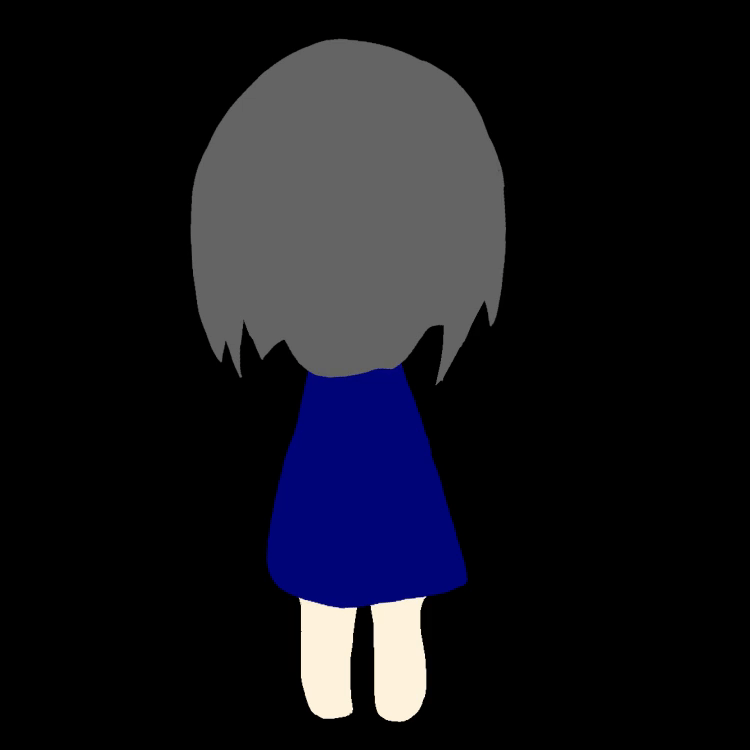

Settings | 设定集
The following settings are listed by time.
All The Time
私(わたし) | 我

The ME.
The left one is the one that shown in the video,and the right one is the original one of my own Live2D(Not used yet).
The Seventh | 七分刻

It's strange.The clock was divided into seven parts....So do our lives?